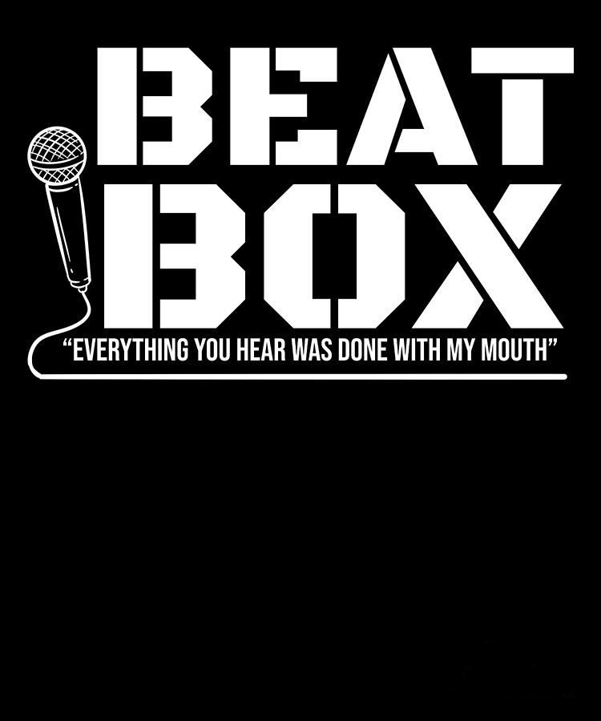

Coding is my hobby and I want to say that I love coding. I'm a begginer in this field and
and I'm in my learning phase now.
I know few of the coding languages namely Python, Javascript, HTML
and CSS but my favourite language to work with is Python due to its simplicity
and ease on syntex. I always feels joy and a sense of satisfaction in doing
coding.
Unlike other Coders I'm also intreseted in hardware side of computers, mainly
CPU and GPU, and also want to study and research on them as well.
Beatbox is my another hobby and I am very passionate about it.
Generally I beatbox for fun and haven't performed on stage yet but I am
preparing some sick routines of beatbox to showcase on stage in near future.
Also I have a dream to make this form of art more famous and more respectful.
Beatbox is not very popular form of art and hence I want to make it a popular one like
other form of art.
